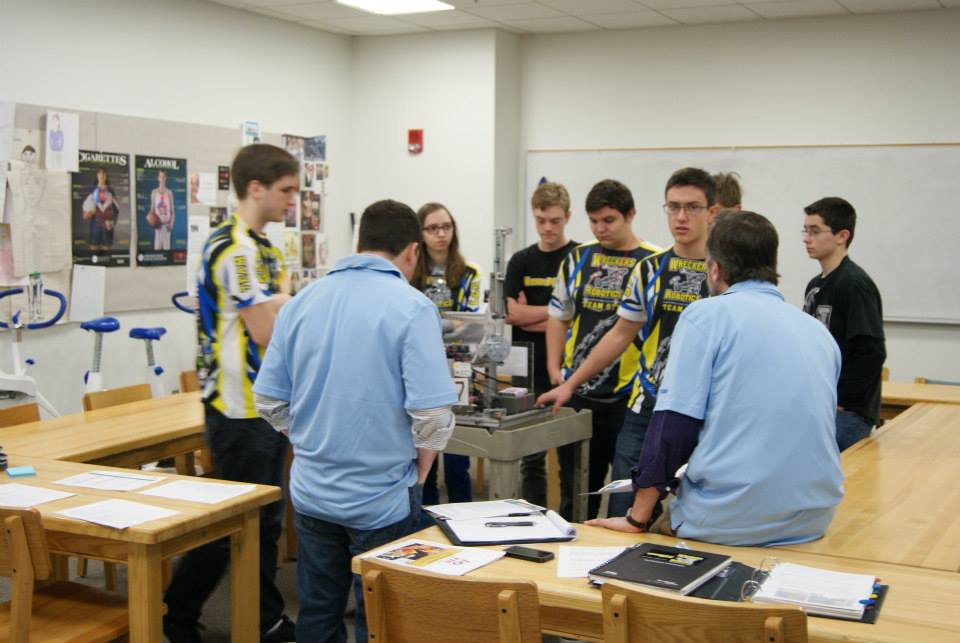

Wreckers Robotics was my first introduction to robotics and team-based engineering. Apart of FIRST tech challenge, we engaged in various engineering challenges that required an interdisciplinary approach combining mechanical, electrical, and software engineering. Our project aimed to design, build, and program robots capable of competing in complex, strategy-based tasks against other teams from around the globe. This intense, competitive environment fostered innovation and creativity among team members.
We made it to the World Championship 2 years in a row, and even competed in the final four alliances in 2014. This same year we were also finalists for the Rockwell Collins Innovate Award and the Control Award.